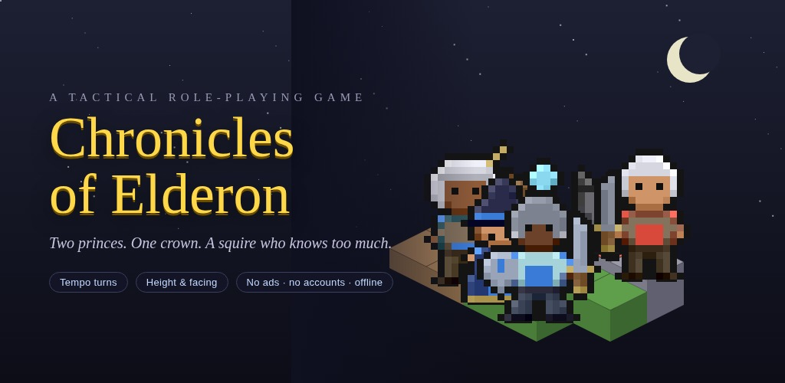
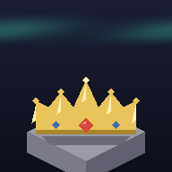
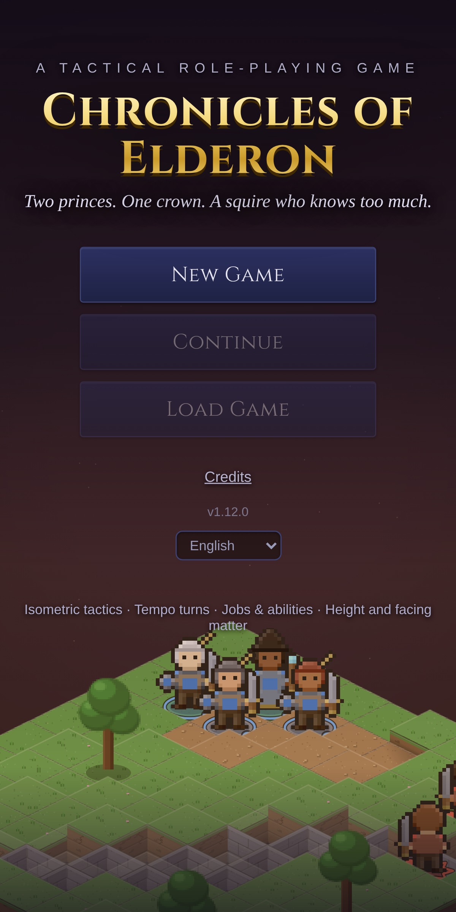
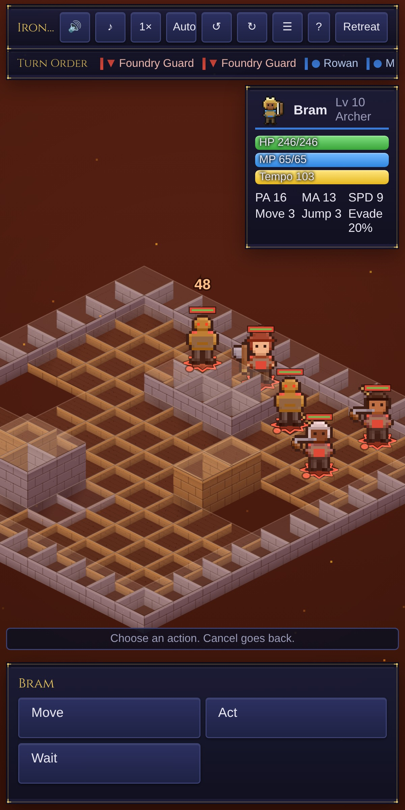
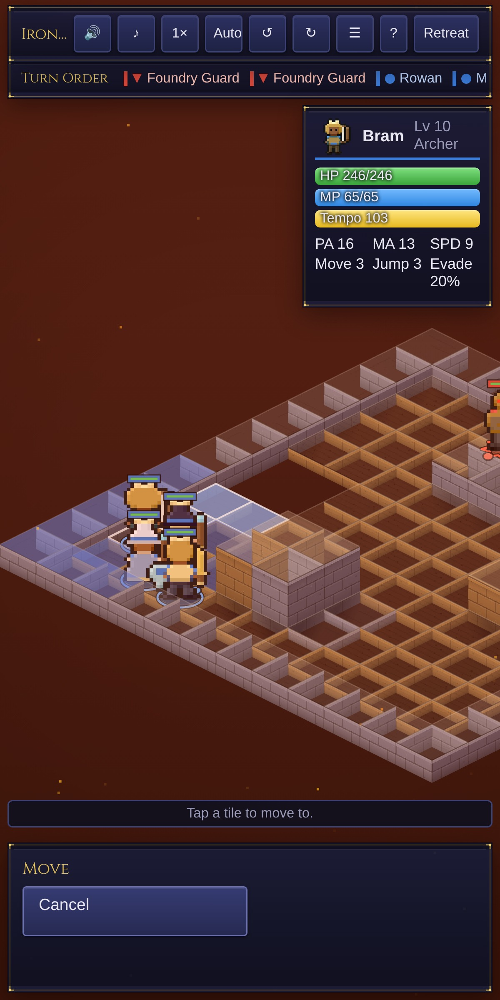
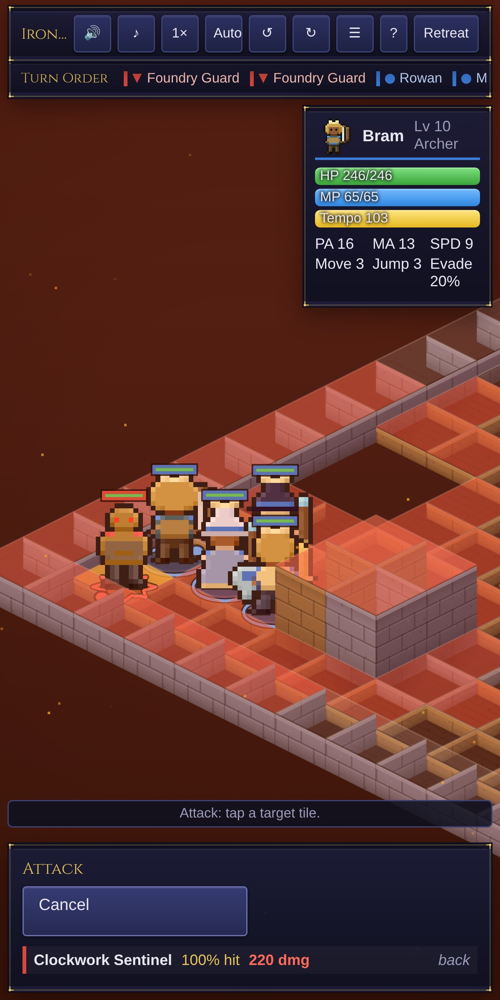
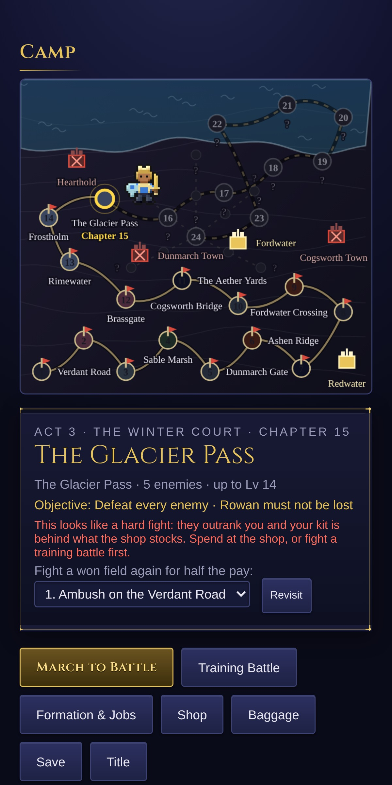
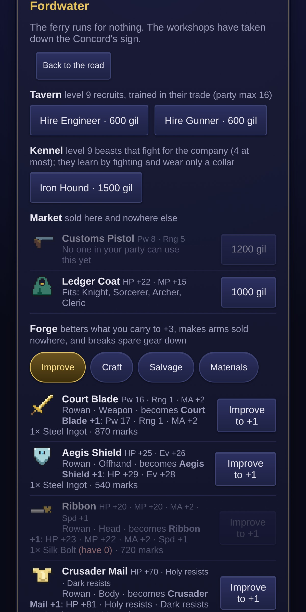
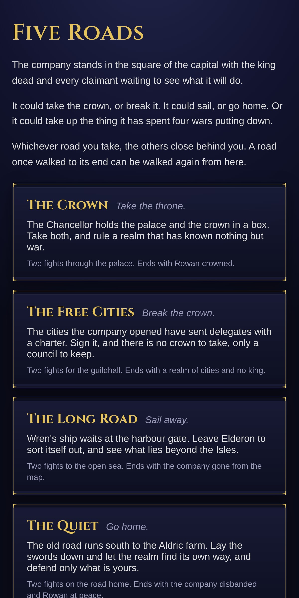
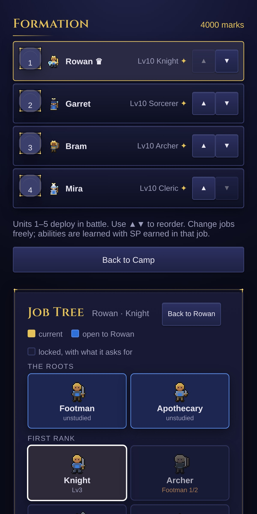

Chronicles of Elderon
Tactical RPG: tempo turns, jobs, height and facing. Offline, no ads.
Chronicles of Elderon is played in the Android app.








Two princes. One crown. A squire who knows too much.
Chronicles of Elderon is a tactical role-playing game in the tradition of the isometric classics. Lead a small company across five acts and twenty-four chapters of battles on height-mapped fields, from a border war to a haunted winter court to a sea of wrecks to a crown worth five different endings, where you stand and which way you face matter as much as what you swing.
Charge-time turns. Every unit gains charge each tick and acts at a hundred. Fast units act often; a slow spell may land after the battlefield has moved on. The turn order is always shown, so you can plan around it.
Height and facing. Every level of high ground adds to a blow, to a quarter more. A strike from the side halves evasion and lands a tenth harder; from behind it cannot be dodged and lands a quarter harder. Climb, jump, and turn the field to see what a wall is hiding.
The hollow sky. A second campaign, sold as its own in-app purchase: a year after the war the bell rings, and east over the Greywall a Choir is singing the sky down. Sixteen chapters in four acts, three endings, four new trades, five new towns, and a battle against your own reflection. Begin it from the title with a veteran company, or carry a finished game east with everything it has.
Thirty-five jobs. Footmen become knights, archers, monks, thieves, mages, ninja and dragoons; then samurai, summoners, geomancers and bards; then paladins, arcanists, assassins and sages; the Brass Concord's engineers, gunners, aeronauts and artificers; the Winter Court's frostweavers, wardens and runeblades; the Sunder Sea's corsairs, tidecallers and harpooners; and the crown's marshals, inquisitors and duelists — with the legendary Dragonlord, Hierophant and Fell Knight above them all. Earn skill points in battle, learn abilities, equip a second skillset from any job you have studied, and pick your reaction, support and movement passives.
Five roads, five endings. At the capital the company's road forks five ways: take the crown, break it for a council of the cities, run the blockade and sail away, lay down the sword and go home, or seize the throne by force and pay the price for it. Every ending is recorded, and the same company can walk every road from the same save.
Elements that matter. Fire, ice, thunder, earth, water, holy and dark. A bomb drinks fire and bursts in ice; a fell knight feeds on dark and dreads holy. The targeting preview tells you the result before you commit.
A kingdom to cross. Ten cities across five acts, each fought open and each stocking its own wares, from Redwater's market stalls to the Chancellor's court in Elderon City.
Equipment you can see. Buy gear between battles and watch it appear on your characters: the sword in hand, the shield on the arm, the helm, the plume.
Made for the phone. Tap to move and act, drag to pan, pinch to zoom, turn the field with a tap. Play in portrait or landscape. Three difficulty settings, changeable at any time.
No strings. No ads. No accounts. No subscriptions, no premium currency. You buy the game once and every chapter of the first campaign is yours; The Hollow Sky is the one add-on, sold in the app. The game lives on your device and plays offline; purchases are handled by Google Play.